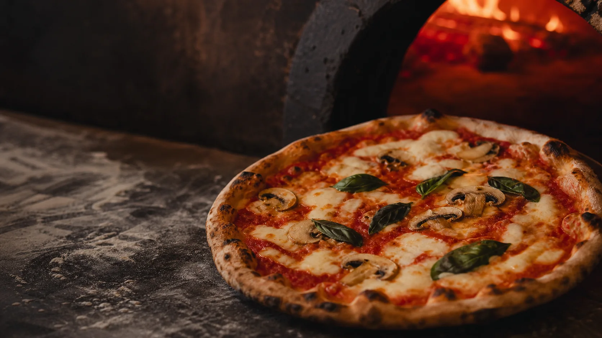

מחשבון פיצה לאירועים
כמה פיצות להזמין?
ליום הולדת, למסיבת כיתה או לערב עם חברים — מחשבים כמות וממשיכים לתכנון ההזמנה.
- פיצריה כשרה
- ראשון לציון
- הצעת מחיר בוואטסאפ
איזה אירוע?
כמה אוכלים?
רמת תיאבון
לאירוע גדול נדרש תיאום. שמרנו את הקלט שהזנתם, אבל אין המלצת כמות אוטומטית מעל 100 משתתפים.
ההמלצה שלנו
7 מגשים
ל-20 ילדים ו-4 מלווים
לפי תיאבון רגיל, בלי אוכל משביע נוסף.
- אורחים
- 24
- פרוסות לפי החישוב
- 52
- פרוסות במגשים
- 56
איך חישבנו?
הרכבים מומלצים להזמנה
כך אפשר לחלק את המגשים בין הטעמים. בחרו הרכב והוא יצורף לבקשת הצעת המחיר.
ההרכבים הם הצעה בלבד — את הטעמים הסופיים סוגרים מול הפיצריה.
בקשת הצעת מחירלדייק את התכנון גיל הילדים, מנה נוספת, רזרבה ופרוסות לאדם
ברירת המחדל מבוססת על רמת התיאבון שנבחרה למעלה. ברגע שמתאימים כאן — רמת התיאבון מפסיקה להשפיע על החישוב, כי המספרים כאן כבר משקפים בדיוק כמה כל אחד אוכל.
שמירת התכנון
נשמר במכשיר הזה בלבד — לא מסתנכרן בין מכשירים ולא נשלח לשום מקום.
התכניות השמורות שלי
עדיין לא שמרתם תכניות במכשיר הזה.
השיטה
איך מחשבים את הכמות?
מחשבים הערכת כמות לפי מספר המשתתפים והתיאבון, ומעגלים למגש שלם. גודל המגש משפיע; מספר החיתוכים לבדו לא.
- 1.5פרוסות לילד בגיל 3–6
- 2פרוסות לילד
- 3פרוסות לנוער או מבוגר
- 8פרוסות במגש אחד
טבלת כמויות
כמה מגשי פיצה צריך לפי מספר האורחים?
מספר המגשים המומלץ לכל גודל אירוע, לפי אותו חישוב של המחשבון. אירוע מעורב של ילדים ומבוגרים הכי פשוט להזין למעלה.
ילדים בגיל בית ספר
| ילדים | תיאבון קל | תיאבון רגיל | תיאבון גדול |
|---|---|---|---|
| 10 ילדים | 2 | 3 | 4 |
| 15 ילדים | 3 | 4 | 5 |
| 20 ילדים | 4 | 5 | 7 |
| 25 ילדים | 5 | 7 | 8 |
| 30 ילדים | 6 | 8 | 10 |
| 40 ילדים | 8 | 10 | 13 |
נוער ומבוגרים
| מבוגרים | תיאבון קל | תיאבון רגיל | תיאבון גדול |
|---|---|---|---|
| 10 מבוגרים | 3 | 4 | 5 |
| 15 מבוגרים | 5 | 6 | 8 |
| 20 מבוגרים | 6 | 8 | 10 |
| 30 מבוגרים | 9 | 12 | 15 |
| 40 מבוגרים | 12 | 15 | 19 |
| 50 מבוגרים | 15 | 19 | 24 |
מה משנה את הכמות
- גיל האורחים. ילד בגן אוכל כמשולש וחצי, ילד בבית ספר שניים, ונוער ומבוגרים שלושה.
- שעת האירוע. בשעת ארוחת ערב מזמינים את הכמות המלאה. בין הארוחות אפשר לבחור תיאבון קל.
- אוכל נוסף. חטיפים, שתייה ועוגה לא מורידים מהכמות. רק מנה משביעה נוספת, כמו פסטה, מפחיתה כ-15%.
- חיתוך. מגש שנחתך ל-16 חלקים נוח יותר לילדים, אבל הוא אותה כמות אוכל.
מדריכים לפי סוג אירוע
טוב לדעת
שאלות נפוצות
- כמה מגשי פיצה צריך ל-20 ילדים?
- בתיאבון רגיל מחשבים 2 פרוסות לילד, כלומר 40 פרוסות — 5 מגשים של 8 פרוסות. אם מצטרפים 4 מלווים מבוגרים, הכמות עולה ל-7 מגשים.
- כמה משולשי פיצה אוכל ילד?
- בתיאבון רגיל: כ-2 משולשים לילד בגיל בית ספר, כ-1.5 לילד בגיל 3–6, וכ-3 לנוער ולמבוגרים.
- כמה פיצות להזמין למסיבת כיתה של 30 ילדים?
- ל-30 ילדים בתיאבון רגיל צריך 60 פרוסות, כלומר 8 מגשים. אם מגיעים גם הורים או צוות, מוסיפים אותם במחשבון כנוער ומבוגרים.
- האם מספר החיתוכים במגש משנה את הכמות?
- לא. חיתוך אותו מגש ל-8 או ל-16 חלקים לא מגדיל את כמות האוכל. גודל המגש הוא שקובע.
- האם שתייה או תוספות מפחיתות את כמות הפיצה?
- לא. רק מנה משביעה נוספת ומלאה (למשל פסטה) מפחיתה את הכמות המחושבת, כי בחרתם בה כארוחה חלופית חלקית.
- למה יש אפשרות להוסיף 10%?
- זו בחירה שלכם לתכנון עם רזרבה, לא תוספת אוטומטית. ברירת המחדל כבויה.
- מה קורה מעל 100 משתתפים?
- המחשבון שומר את הקלט אך לא מציג המלצה אוטומטית — אירוע בסדר גודל כזה דורש תיאום ישיר מול העסק.
יש כמות. נשאר לסגור את הפינה.
שולחים את התכנון בוואטסאפ ומקבלים הצעת מחיר ישירות מפיצה וירטואוז.
הצהרת נגישות
עודכן לאחרונה: 16 בספטמבר 2026.
דף זה תוכנן ונבנה תוך הקפדה על עקרונות נגישות מבוססי WCAG 2.0 ברמה AA, העומדים בבסיס תקן ישראלי 5568. בין הפעולות שבוצעו:
- תפעול מלא באמצעות מקלדת בלבד, ללא צורך בעכבר, לכל הפקדים והכפתורים.
- תוויות טקסט לכל שדה וכפתור עבור קוראי מסך, כולל הכרזה על עדכון התוצאה (aria-live).
- ניגודיות צבעים שנבדקה ונמדדה בפועל בין טקסט לרקע בכל מצבי התצוגה.
- פריסה מלאה מימין לשמאל (RTL) בעברית, כולל סימני כיוון נכונים למספרים ולקישורים.
- פריסה שנבדקה ונשארת שמישה וללא גלילה אופקית ברוחבי מסך צרים, כולל הגדלת תצוגה.
- קישור דילוג לתוכן הראשי בתחילת העמוד.
- כיבוד הגדרת "הפחתת תנועה" של מערכת ההפעלה — ללא אנימציות מיותרות למי שביקש זאת.
- תפריט נגישות חינמי (כפתור צף בפינת המסך) המאפשר התאמות תצוגה, גודל טקסט, ניגודיות, גופן לדיסלקציה, הקראת תוכן וניווט מקלדת — אותו הכלי הפעיל גם באתר הראשי של פיצה וירטואוז.
מגבלות ידועות: טרם בוצעה בדיקת נגישות פורמלית על ידי בודק נגישות מוסמך, וייתכנו רכיבים שלא נבדקו במלואם מול טכנולוגיות מסייעות ותיקות. הצהרה זו תעודכן לאחר ביצוע בדיקה כזו.
נתקלתם בבעיית נגישות בדף זה, או זקוקים למידע שמופיע כאן בדרך חלופית? אפשר לפנות לפיצה וירטואוז טלפונית: 03-9504888 או בוואטסאפ: 054-2537257.